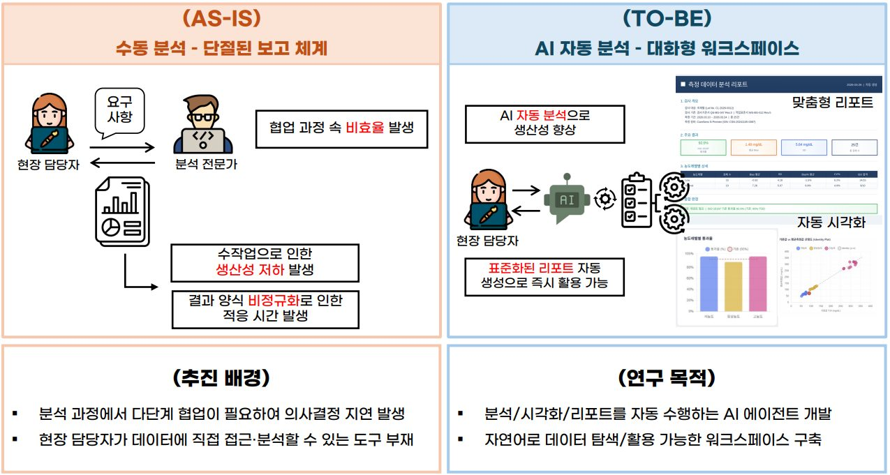

[Ongoing] 조제혈·임상·컨트롤솔루션 측정 데이터 기반 품질 관리 자동화를 위한 정리-모니터링-분석 AI Agent 기술 개발
연구책임자 / 2026.06.01 ~ 2026.12.31 / 아이센스 (KRW 80 million)
조제혈·임상·컨트롤솔루션 측정 데이터 기반 품질 관리 자동화를 위한 정리-모니터링-분석 AI Agent 기술 개발 (Development of an Organize–Monitor–Analyze AI Agent for Automated Quality Management of Measurement Data on Prepared Blood, Clinical, and Control Solution)기간: 2026.06. ~ 2026.12.
Funding: i-SENS (KRW 80 million)
본 연구는 (주)아이센스의 조제혈·임상·컨트롤솔루션 측정 데이터에 대한 품질 관리 업무를 자동화하기 위해, 수작업 의존에 따른 휴먼 에러와 비효율을 줄이는 "정리-모니터링-분석 AI Agent"를 개발하는 것을 목표로 합니다. 이를 위해 ①원시 측정 데이터를 작업표준서·검사기준서에 맞춰 정리하고 ISO 적합·Bias·SD·CV 등 산출 지표를 생성하는 VLM Parser Agent 기반 정리 파이프라인, ②일정 기간의 검사 결과 경향성과 특이사항을 추적·표시하는 Loader Agent 기반 모니터링 파이프라인, ③Code Act 구조의 데이터 분석 AI 에이전트와 docx·pdf·xlsx 리포트를 생성하는 대화형 분석 워크스페이스를 개발하고, ④대화형 워크스페이스 사용성(SUS), 분석 작업 성공률(SR), 정리·모니터링 자동화 정확성(Acc)으로 성능을 검증합니다. 이를 통해 현장 품질관리 업무의 효율성과 데이터 해석 용이성을 높이고자 합니다.
English Summary:
This project aims to automate quality-control work on i-SENS's measurement data—prepared blood, clinical, and control-solution—by developing an "Organize–Monitor–Analyze AI Agent" that reduces human error and inefficiency arising from manual processing. It develops ① a VLM Parser Agent pipeline that organizes raw measurement data according to work and inspection standards and derives indicators such as ISO conformity, Bias, SD, and CV, ② a Loader Agent pipeline that tracks and visualizes result trends and anomalies over a given period, and ③ a Code-Act-based data-analysis AI agent and a conversational analytics workspace that generates docx/pdf/xlsx reports, ④ validated through workspace usability (SUS), task success rate (SR), and automation accuracy (Acc). The outcomes enhance the efficiency of on -site quality management and the ease of data interpretation.
